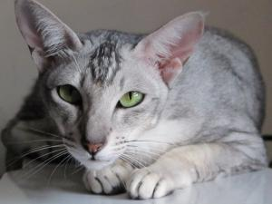
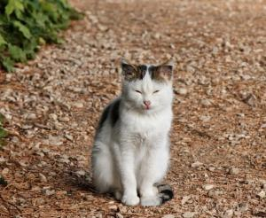

Gator Burmes
Mas detalles aqui...Raza
Gatos DomésticosColor
Desde los amarillos claros hasta los dorados intensosDescurbierto
Aprox. en el Siglo VIDescripción
La raza Burmés es de origen birmano. Son gatos que presentan una extraordinaria personalidad. Son cariñosos, divertidos, cercanos, etc. Éstas y otras características que veremos en este artículo los convierten en excelentes animales de compañía.
Es importante darle a estos gatitos mucho cariño y caricias ya que como hemos dicho son unos animales muy cariñosos. También es importante cepillar su pelaje con frecuencia.
Galería


